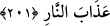

200. “Hac ibâdetlerinizi bitirince, babalarınızı andığınız gibi, hatta ondan daha
kuvvetli bir şekilde Allah’ı anın. İnsanlardan öyleleri var ki: Ey Rabbimiz! Bize
dünyâda ver, derler. Böyle kimselerin âhıretten hiç nasibi yoktur.”
Yâni Cahiliyye âdetlerini terkedin. İslâm’ın usullerine uyun. Allah’ın zikriyle meşgul
olun. Eskiden Araplar, hac menâsikini tamamlayınca Minâ’da câmi ile dağ arasında
vakfe yaparken, atalarının fazîletlerini iyi zamanlardaki üstünlüklerini zikrederek
övünürlerdi. Böylece her kabîle atalarının meziyetleriyle kendini yücelterek şöhrete
ermek isterdi. Allah Teâlâ, bu âyetle bu âdeti sona erdirdi ve onlara babalarını anmak
yerine Allah’ı anmayı, O’nu hamd ve senâ etmeyi emretti. Çünkü her türlü hayır O’nun
katındandır. İnsanların babaları da, ataları da nihâyet O’nun kuludur. Her ne fazîlete
ermişlerse Allah’ın ihsan ve ikrâmı sâyesinde ermişlerdir. Sa’dî der ki:
Hak’tan kuluna hayırlı başarı olmazsa
Kuldan ona başarı nasıl olur?
Daha güçlü bir şekilde zikredin; yâni babalarınızı övünerek andığınız gibi Allah’ı
anın, ya da ondan daha güçlü ve belli bir şekilde O’nu anın.
Hacc farîzasını yapanlardan bazıları zikirlerini dünyâ talebine tahsîs ederek: “Ey
rabbımız bize dünyâda iyilik ver” diye duâ ederler. Onların dünyâdan beklentileri
makam, zenginlik ve düşmana karşı zafer gibi dünyevî hazlardır. Sadece dünyâlık
talebinde bulunanlar ise müşriklerdir. Çünkü onlar, ancak dünyâlık ihtiyaçlarını isterler.
“Onların âhırette bir nasîbleri olmaz.” Çünkü onların arzuları sadece dünyâya
münhasırdır. Çünkü yerlerin en yücesinde, isteklerin en bayağısıyla uğraşırlar. Dâimî
olan cennet nimetlerinden talepte bulunmazlar.
201. Onlardan bir kısmı da: Ey Rabbimiz! Bize dünyâda da iyilik ver, âhırette de
iyilik ver. Bizi cehennem azâbından koru! derler.
et-Teysîr’de gelmiştir ki: “Hasene” iki dünyâda hayırları cem’ eden şey, demektir.
Âhıretteki hasene (güzellik) ise sevap ve rahmettir.
Şeyh Ebu’l-Kasım el-Hakîm der ki: Dünyanın hasenesi, mutlu bir hayat ve kelime-i
şehâdetle ölümdür. Âhıretin hasenesiyse kabirden müjdeyle kalkmak, Sırat köprüsünü
selâmetle geçmektir.
Hz. Ali der ki: Dünyâda hasene, sâliha bir hanım âhırette ise hûrîlerdir. Cehennem
azâbı ise kötü kadındır, Sa’dî der ki:
Güzel yüzlü ve namuslu kadın,
Güzellik ve namusuyla cennet yaşatır.